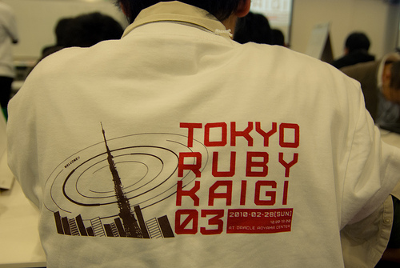

RegionalRubyKaigi レポート (14) 東京 Ruby 会議 03
はじめに
: 
2010 年 2 月 28 日、東京の青山にあるオラクル青山センターには、朝からの雨にもかかわらず、10 時 20 分からの開始を待たずに参加者が集まり始めました。参加者たちが期待にあふれる顔をしている反面、スタッフには不安な空気が流れています。
当日は東京マラソン 2010 の日でした。そのため、イベント用資材の到着が交通規制の影響を受け、遅れてしまっていたのです。ようやく搬入ができたのは、もう開始時間になってしまうというギリギリのタイミングだったのでした。
そんな波乱の中、実行委員長の宣言とともに東京 Ruby 会議 03 が開会されました。
概要
東京 Ruby 会議 03 は、3 つのセッションと 13 のハンズオンワークショップで構成されていました。タイムテーブルは次のとおりです。
- 開会挨拶
- 10:20-10:30
- セッション「メタプログラミング入門」
- 10:30-12:00 Yugui さん
- ハンズオンワークショップ
- 13:00-14:00
- セッション「A Reintroduction to Ruby M17N」
- 14:30-16:00 成瀬ゆいさん
- セッション「open3 のはなし」
- 16:10-17:40 田中哲さん
- 閉会挨拶
- 17:40-18:00
メタプログラミング入門
最初のコマは、yugui さんの「メタプログラミング入門」です。Ruby でどのようにメタプログラミングをするのかをテーマに、定義から道具立てや事例まで、一気に解説をする内容になっていました。
メタプログラミングとは、最小のコードでより多くの構造を生成するために「プログラムをプログラム」することだそうです。たとえば、ループやアクセサメソッドなど冗長になってしまいがちなコードをメタプログラミングで簡潔にすることができます。
そして、 Ruby でどのようにメタプログラミングを実現するのか、Lisp や C++、Java など言語設計の判断に言及しながら、Ruby の特性について説明がなされました。また、そのための道具立てとして、Ruby では、特異クラスや呼び出し可能オブジェクト、eval や method_missing などを活用することでメタプログラミングをしていくそうです。セッションでは、それぞれの利用方法、さらには Ruby 内部の挙動などにも言及しながら解説がされていきました。
最後に yugui さんが実際に構築したという事例の紹介がされました。稼動するサーバに接続し、irb でインタラクティブに内部の状況を診断することができるようにするというハックです。このプログラムの中でメタプログラミングのテクニックがどのようにつかわれているのかという説明やセキュリティ上の注意などが議論されました。
ハンズオンワークショップ
お昼休み休憩をはさんで、午後はハンズオンワークショップで幕開けです。午前中のスクール形式の机の配置が変更され、机を向き合わせた島型対向式レイアウトに並べかえられました。13 の島にそれぞれに講師の皆さんが座り、ワークショップへの参加者をつのりました。
各ワークショップのテーマと講師は次の通りです。
- 今更ながらの Ruby on Rails 入門
- 吉田裕美 (EY-Office)
- Sinatra on heroku で作るかんたん web サイト
- 吉川毅 (Tokyu.rb) 、河野十行 (Tokyu.rb／株式会社万葉)
- Rails 3 ハンズオン
- 松田明 (Asakusa.rb)
- 実践 Ruby Best Practice
- 高橋征義 (日本 Ruby の会)
- 東京 jpmobile 会議
- 小川伸一郎 (Tokyu.rb) 、設楽洋爾 (Ruby 札幌)
- Ruby で作る Ruby の折り紙
- 志村 (日本 Ruby の会)
- Ruby から MongoDB を使う
- 浦嶌啓太 (株式会社永和システムマネジメント／日本 Haml の会)
- Ruby の仕事で食べていくために僕らは！
- おおかゆか (フリーランスのプログラマ)
- 様々な Ruby を共存させる rvm のご紹介
- Takkanm (Asakusa.rb／株式会社永和システムマネジメント) 、fistfvck (Asakusa.rb)
- RSpec 入門とその一歩先へ
- 和田卓人 (タワーズ・クエスト株式会社)
- Ruby グルメマップを作ろう
- 五十嵐邦明 (株式会社万葉) 、大和田純 (サイジニア株式会社) 、白土慧 (サイジニア株式会社) 、三浦彩 (株式会社オプティム)
- routes 職人への道
- 大場寧子 (株式会社万葉)
- Ruby でゲームプログラミング体験
- kuko (galge.rb／株式会社万葉) 、するき@tazyamah (galge.rb)
各ワークショップには、あらかじめイーゼルパッドだけが用意されていたのですが、自前の液晶ディスプレイを持ち込んでいるところや、 SlideShare や自分のブログにハンドアウトを掲載していたところ、自著のゲラ刷りをコピーして配っていたところ、欧文印刷から提供いただいた「消せる紙」を使っていたところなど、それぞれに工夫されていました。中には折り紙に徹しているところ、メイド服で講師をしている人などもいました。
A Reintroduction to Ruby M17N
机の配置をスクール形式に戻し、成瀬ゆいさんによる「A Reintroduction to Ruby M17N」というセッションです。内容は「文字コードとは」からはじまって、M17N の歴史をたどり、Ruby での実装から各種ツール、API の使い方に至るものでした。
「日本に生まれたことを後悔したくなる」という言葉が飛び出したセッションは、まず最初に概念や用語の整理がされました。次に、ASCII からの拡張の歴史や Unicode のねらい、そこから派生して円記号問題や WAVEDASH、機種依存文字といった歴史的経緯による問題についても言及がされました。
それから、テーマが処理系の問題へと移ります。内部コードをどうするのかについて、.NET Framework や Perl、Python ではどういう実装がされているのかといった話にも触れつつ、Ruby 1.9 での実装が解説されます。エンコーディング変換や携帯絵文字といった課題についても触れられ、ユースケースの集積が不足しているため適切な仕様策定に至っていないという指摘でセッションは締め括られました。
open3 のはなし
最後のコマは、田中哲さんによる、「open3 のはなし」です。内容は、使いやすい API を持った、プロセスを起動する良い方法を提供するために、spawn メソッドの新設と open3 ライブラリの拡張という取り組みをした経緯のお話で、その中で、UNX のプロセスや API 設計のポイントのような、Ruby に限らない話題におよぶものでした。
この 90 分間は、まさに大学や専門学校の特別講義のようでした。問題の提起からはじまって、問題の分解、分解戦略の適否、個々の問題の解決にむけた既存の代替案の収集、その中で、UNIX の基礎や Ruby にまつわるさまざまな制約をふりかえりつつ、今回の問題にそった各代替案の適用可能性の検証といった、しっかりとした骨組みの議論が続きます。
それらの議論を踏まえ、問題を高位のレイヤと低位のレイヤに分け、それぞれを open3 と spawn として実装することで、最初に提示された問題を解決できることが示されました。また、それぞれの API の利用例についても解説がされました。
さいごに
今回のプログラムの特徴である、90 分の講義 3 本は内容が濃く、まさに 90 分かけて聞くべき内容と評価していただけたと感じています。
ハンズオンワークショップは、和気藹々としたスタイルが、よかったと評判でした。特にどのワークショップに参加しようかと選ぶ楽しみと、他をあきらめなくてはいけない苦しみで、参加した皆さんに深い印象を残したようです。
会場は、立地や設備、眺望などに加え、無償で飲み物が提供されたことが大変好評でした。会場をご提供いただいた日本オラクル株式会社および関係者の皆様に感謝いたします。
資料／リンク
- 資料:「A Reintroduction to Ruby M17N」
- 資料:「open3 のはなし」
- 動画: http://www.ustream.tv/channel/tokyorubykaigi03
- 写真: http://www.flickr.com/photos/tags/tokyorubykaigi03
著者について
橋本明彦 (Asakusa.rb／福岡Rubyビジネス拠点推進会議)
1959 年東京生まれ。Fortran のプログラマとして職業人生活をスタート。半導体設計・製造分野のシミュレータ、ツール等の開発にたずさわる。一時オープンソースを推進する政府系組織に関わり、それ以降コミュニティにもお邪魔している。
高井直人 (Akasaka.rb)
1977 年横浜生まれ。大学在学中からネットワークや Web 技術にたずさわる。 Web 制作会社などを経て、現在はシステムインテグレータに勤務。社内開発環境の標準化などに従事している。